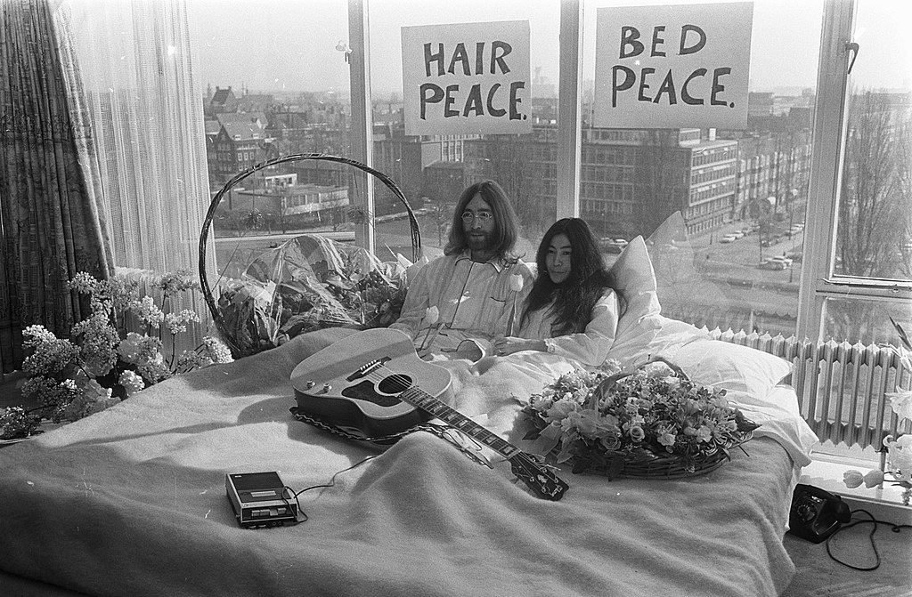

Culture | Japan
Japanese Modern Art
Published: March 11 2021
An introduction to modern art in Japan.
Introduction
Let us go over some well-known examples of Modern Japanese art and discover how it 'presents itself' to the world. We could, as always, include more on this list. But here is a nice introduction to the ways in which Japan's modern artstyle expresses itself.General development
The Japanese traditionally love balanced art: the complex needs to be contrasted with the plain and simple. A Japanese professor explains that in this video. However, modern Japanese artists have challenged this traditional concept.
Some have found new iterations of this contrast. Chiharu Shiota uses the structure of a huge web of lines to achieve it. Others have fully gone into the abstract & absurd. The game designer Hideo Kojima is a great example of this. In one of his games, he starred Danish actor Mads Mikkelsen and made some mind-boggling scenes that play with dimension and have an overly amplified atmosphere.
Famous examples
The art of modern-day Japan is so varied that it becomes hard to define. It manifests itself in a large number of ways: bodily expression, video gaming, lighting, street signs, poetry, film and more. But, it also exists in many different realms: museums, books and tv. Let us go over some examples of how modern Japanese artists express themselves. Unfortunately, it does not allow us to define 'the Contemporary Artstyle' of current-day Japan. But, it allows us to get a nice feeling of what it is like.
Manga
Japan is well-known for its manga and anime. They produced famous titles such as Pokémon, Deathnote and Rurouni Kenshin. The artstyle that is used in these artforms is so unique that it easily stands out among other pieces of art.
The collectibles that accompany these kid-friendly shows are now selling for sky-high prices. It underlines that this expression is unquestionably a form of art.
Yoko-Ono
You might know Yoko-Ono as the former wife of John Lennon. But, did you know the Japanese lady has quite a big repetoire of art-pieces? She published artwork, music, books and films.
Her eccentric lifestyle could be seen as art in itself. Take her bed scenes with John Lennon for instance. If you ask me, bodily expressions like these are definitely pieces of art. 
The bed scene of Yoko Ono and John Lennon in the Hilton in Amsterdam (1969)
Another art-piece that was incredibly popular at the time, was Yoko Ono's Bag Piece (1964). She relived it with fans in 2015, at the Museum of Modern Art.
Kawaii culture
Another quite well known form of Japanese art / expression is the Kawaii style. One of its hallmarks is cute clothes, potentially with some playful characters on it. If you visit large Japanese cities, you may actually see people who dress up in this fashion style every single day. In this video we learn that Kawaii has many different iterations, like any other artstyle does.
Professional artists
Japan has a large number of professional and experimental artists - and there are too many of them to name them all. The website 'Japan-guide' provides us with an elaborate list of museums for Contemporary art in Japan. They also list some famous festivals you could attend on a journey to Japan.